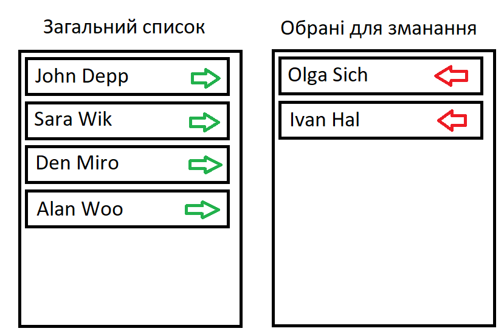

Завдання №6
Дано список спортсменів. Потрібно сформувати список тих, які будуть брати участь у змаганні. При цьому є два стовпці. В одному відображені всі спортсмени, в іншому – список тих, хто був вибраний. При натисканні на зелену стрілку спортсмен переміщається у список для змагань. При натисканні на червону стрілку спортсмен переміщається у загальний список.
